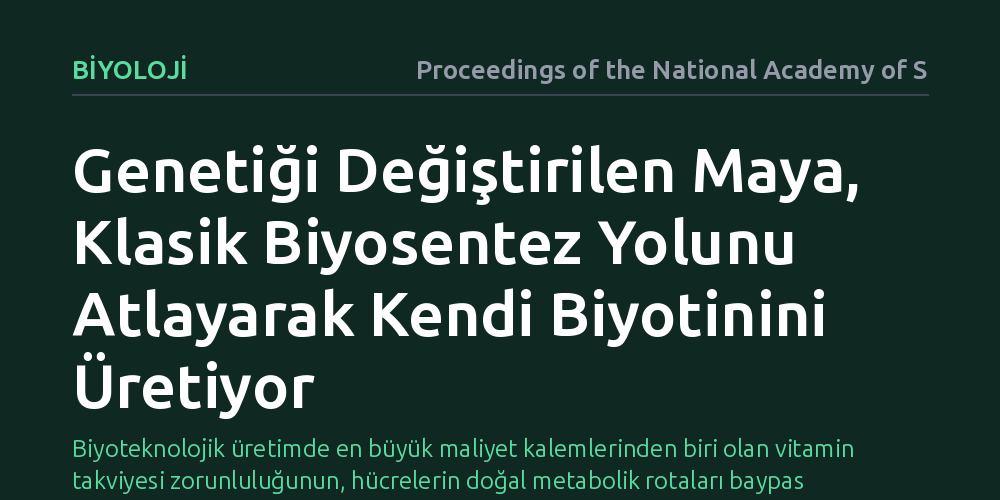

BIYOLOJI · Proceedings of the National Academy of Sciences · 2026-10-20
Endüstriyel fermantasyonda kullanılan mayanın neden dışarıdan pahalı biyotin takviyesine ihtiyaç duyduğu ve bu kısıtlamanın nasıl aşılabileceği araştırıldı. Araştırmacılar, klasik biyotin üretim zincirini atlayan alternatif bir metabolik yol kurarak mayanın dışarıdan vitamine ihtiyaç duymadan büyümesini sağladı.
Biyoteknolojik üretimde en büyük maliyet kalemlerinden biri olan vitamin takviyesi zorunluluğunun, hücrelerin doğal metabolik rotaları baypas edilerek ortadan kaldırılabileceğini gösteriyor.

Endüstriyel biyoteknoloji; ilaç hammaddelerinden biyoyakıtlara ve gıda bileşenlerine kadar çok çeşitli kimyasalların üretiminde fırıncı mayası olarak bilinen Saccharomyces cerevisiae organizmasına dayanır. Ancak bu mikroskobik canlı devasa fermantasyon tanklarında çoğalırken önemli bir biyolojik zayıflık sergiler: Biyotin, yani bilinen adıyla B7 vitaminini kendi başına üretemez. Biyotin; hücrenin yağ asidi sentezini gerçekleştirmesi ve temel karbon metabolizmasını yürütebilmesi için vazgeçilmez bir yardımcı moleküldür. Bu biyolojik zorunluluk nedeniyle sanayi tesisleri, tonlarca mayayı canlı tutabilmek için fermantasyon ortamına sürekli dışarıdan saf biyotin eklemek zorunda kalır.
Bu durum ilk bakışta basit bir besin takviyesi gibi görünse de devasa ölçekli endüstriyel üretimde milyonlarca dolarlık ciddi bir maliyet kalemine dönüşür. Biyotinin kimyasal yollarla üretimi hem pahalıdır hem de üretim zincirinin çevresel sürdürülebilirliğini olumsuz etkiler. Yıllardır biyomühendisler mayaya doğada bakterilerin kullandığı klasik biyosentez genlerini aktarmaya çalışmış, ancak bu zincirin çok sayıda karmaşık enzime ve hücre içi bölümlere bağımlı olması nedeniyle verimli bir sonuç elde edilememiştir.
Araştırmacılar, doğada bakteriler ve bitkiler tarafından kullanılan çok basamaklı klasik biyotin üretim yolunu olduğu gibi mayaya aktarma yaklaşımını bir kenara bıraktı. Klasik biyolojik yol, özel taşıyıcı proteinler ve ardışık karmaşık reaksiyonlar gerektirdiğinden ökaryotik bir hücre yapısına sahip mayada verimsiz kalıyordu. Bunun yerine ekip, hücrenin mevcut metabolitlerini kullanarak klasik ara basamakları tamamen baypas eden alternatif ve daha kısa bir biyokimyasal köprü kurmayı hedefledi.
Tasarlanan bu kestirme metabolik rota, genetik mühendisliği yöntemleriyle maya genomuna entegre edildi. Farklı enzimlerin uyumlu biçimde çalışması sağlanarak hücrenin kendi iç kaynaklarından doğrudan biyotin üretmesini mümkün kılan kurgusal bir biyokimyasal devre inşa edildi. Ardından modifiye edilen bu maya suşları, ortamında hiç biyotin bulunmayan sentetik besiyerlerinde laboratuvar ölçekli kültür deneylerine tabi tutuldu.
Laboratuvar testleri, kurulan alternatif rotanın başarıyla çalıştığını ve mayanın klasik biyotin sentez basamaklarına ihtiyaç duymadan hayatta kalabildiğini gösterdi. Standart maya hücreleri dışarıdan biyotin verilmediğinde bölünmeyi hızla durdururken, alternatif baypas rotasına sahip suşlar biyotinsiz büyüme ortamında sağlıklı biçimde çoğalmayı sürdürdü.
Elde edilen sonuçlar, doğanın milyonlarca yıllık evrimle oluşturduğu çok basamaklı ve karmaşık bir metabolik sürecin, hedefe yönelik akılcı bir mühendislik hamlesiyle çok daha yalın bir biçimde ikame edilebileceğini kanıtladı. Hücre içi metabolik akışın bu alternatif hat üzerinden dengeli şekilde ilerlediği, hücrenin temel fizyolojik süreçlerinin ve lipit üretim kapasitesinin korunduğu belirlendi.
Bu çalışma, endüstriyel fermantasyon süreçlerinde pahalı vitamin takviyesi zorunluluğunu ortadan kaldırmak adına güçlü bir zemin sunuyor. Biyotin bağımlılığının sona ermesi; biyolojik yollarla üretilen organik asitlerin, ilaç öncüllerinin ve endüstriyel enzimlerin üretim maliyetini kayda değer ölçüde düşürebilir. Böyle bir maliyet avantajı, biyo-tabanlı üretimi petrokimyasal yöntemlerle rekabette çok daha avantajlı bir noktaya taşıyacaktır.
Daha geniş bir çerçevede ise araştırma, sentetik biyolojideki paradigma değişimini gözler önüne seriyor. Hücreleri doğadaki halleriyle aynen taklit etmek yerine, metabolik düğümleri analiz edip kestirme yollar tasarlamak biyoteknolojik süreçleri sadeleştiriyor. Bu yaklaşım, gelecekte mayanın dışarıdan bağımlı olduğu diğer kofaktör ve besin maddeleri için de benzer baypas çözümlerinin geliştirilmesine ilham verebilir.